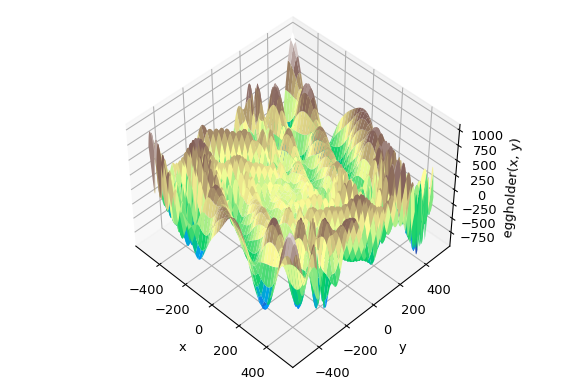

RT @mjg59: The Twitter situation is basically last year's Freenode implosion, except without the convenience of a newly stood-up replacemen…
Replying to @mjg59
And without the convenience of a newly stood-up replacement, will the implosion actually happen? I think we tech folks and M*sk haters live in a bubble. Probably most users don't give a damn.
Replying to @mjg59
Twitter hasn't been "hot" for years and yet I still feel I have lots of meaningful conversations and extract valuable information and knowledge from it. Plus, it's still the tool of choice for protestors and activists. The cool people flocked to Instagram and now TikTok long ago.
#novembeat, day 01. Audio on Linux, to my surprise, worked like a charm.
#foxdot #pipewire #pulseaudio #jack #qjackctl
RT @orchestofficial: üóΩ Next week #PyDataNYC will take place at the Microsoft Conference Center, next to Times Square. Our Data Scientist Ad‚Ķ
Started with "how can I merge these two dataframes by similarity", and ended up reading this excellent guide by @yifei_huang
about Entity Resolution
https://towardsdatascience.com/practical-guide-to-entity-resolution-part-1-f7893402ea7e
➕ successfully applied those ideas in Python with recordlinkage
RT @tomgara: It’s pretty simple: Google Meet (original) was previously Meet, which was the rebranded Hangouts Meet. Meet has been merged wi…
Replying to @pauloxnet, @sethmlarson and @anthonypjshaw
Been on Fosstodon since Feb 2021, very happy with it. It's English-only though, so I just switched to a personal instance on Masto dot host. See you all there https://social.juanlu.space/@astrojuanlu
What is the equivalent of Arrow for n-dimensional arrays ("tensors")? ü§î
(Meaning: post-NumPy, community-developed, stakeholder-neutral, language-agnostic)
Replying to @juanluisback
More https://twitter.com/samuel_colvin/status/1587777932373655554
Replying to @pedroeltercer, @timeoverflow, @coopdevs and @ADBdT
Cada pocos meses miro si hay algún banco de tiempo activo en Madrid, y solo encuentro enlaces rotos...
RT @weareopencoop@mastodon.social
Earning badges in openness, a post from epilepticrabbit
https://blog.weareopen.coop/earning-badges-in-openness-295838efcc24
https://mastodon.social/@weareopencoop/109263351892582950
Replying to @westurner
Interesting - but #ONNX seems to be more geared towards the AI/ML models themselves, am I right? Good to see it's part of the @linuxfoundation in any case
Replying to @westurner
TIL Arrow has tensors, awesome!
RT @westurner: @juanluisback Pyarrow.Tensor https://arrow.apache.org/docs/python/generated/pyarrow.Tensor.html#pyarrow.Tensor
Arrow C++ Tensor
https://arrow.apache.org/docs/cpp/api/tensor.html
SparseTensor https://t.co/CGQ7…
Replying to @ketozhang
Saw it! Do you think they will become more widespread in the future? https://twitter.com/westurner/status/1587882314087792640
#novembeat, day 02. Had a lot of fun with this one.
#foxdot #livecoding #pipewire #pulseaudio #jack #qjackctl #livecoding
#novembeat, day 02. Had a lot of fun with this one.
#foxdot #pipewire #pulseaudio #jack #qjackctl #livecoding
RT @wuoulf: I am extremely happy to announce the mamba 1.0 release üéâ
If you are curious on what's new, check out this blog post:
https:/…
Replying to @juanluisback
üíï
https://fosstodon.org/@djnavarro/109277029408695144 (3/3)
Replying to @juanluisback
https://art.djnavarro.net/
- Website: https://djnavarro.net/
- Art-only account: @djnavarro@genart.social
Oh and so are these:
- Arrow: https://arrow-user2022.netlify.app/
- Art: https://art-from-code.netlify.app/
- R and stats: https://learningstatisticswithr.com/
- ggplot2: https://ggplot2-book.org/
Hi! (2/3)
RT @djnavarro@fosstodon.org
An #introduction post! I'm Danielle, a data scientist and generative artist üé® working in #rstats and #python. I'm a developer advocate at Voltron Data and help out with #ApacheArrow üèπ
These are me:
- Blog: https://blog.djnavarro.net/
- Art: (1/3)
Replying to @juanluisback
published and used to guide future direction
üê¶üîó: https://twitter.com/condaproject/status/1587899222690762752
https://mastodon.social/@jezdez/109276509923841928 (2/2)
RT @jezdez@mastodon.social
RT condaproject
#conda Package and Environment Manager users, we want to hear from you! Complete a survey about your experience using conda, and enter a raffle for a chance to win a $150 Amazon gift-card. https://forms.gle/tj9froz7nZzBgKqm8 Results will be (1/2)
Replying to @juanluisback
focus, I think it will have the tendency to serve the interests of the people sitting in that room every day rather than what we may consider our broader goals.
...
#SocialCoding humanetech
https://tech.lgbt/@IgnisIncendio/109277962439186739 (2/2)
RT @IgnisIncendio@tech.lgbt
Interesting quote:
We should try to reduce the burden of building software. At this point, software projects require an enormous amount of human effort.
...
As long as software requires such concerted energy and so much highly specialized human (1/2)
Replying to @HenrySchreiner3, @IMADJamil and @_WaylonWalker
For now I'm still using flit for all new projects, but when I start exploring something new, I'll definitely try to dive deeper into PDM vs Hatch
The tactics to introduce malware in PyPI are getting more sophisticated. If your company is not using a mirror or a curated repository, it's at risk.
https://blog.phylum.io/phylum-discovers-dozens-more-pypi-packages-attempting-to-deliver-w4sp-stealer-in-ongoing-supply-chain-attack
#python #supplychain #security
RT @Recuenco: Porque la gente no sabe en qué se traduce exactamente ser carismático y/o exitoso y copian solo los signos externos evidentes…
Replying to @pwang
Nah, bad take https://twitter.com/Jemima_Khan/status/1587712756014358529
"A premium Twitter" != "The blue check". The Chief Twit has conflated both things with his usual modus operandi and now the discussion has become completely unproductive. Not that I'm at all surprised.
Replying to @zooba and @pwang
Where did you read that they will match the name in the card with the name of the profile? Honest question.
Replying to @PatricioFS_
A mucha gente no se la sudaba https://twitter.com/Jemima_Khan/status/1587712756014358529
No hace falta llevarle el agua a Space Karen, ya se las apaña bien él solito
Replying to @pwang
This was cruel and unnecessary, and justifying it feels cruel and unnecessary.
Replying to @HenrySchreiner3, @IMADJamil and @_WaylonWalker
Are you talking about https://github.com/pypa/flit/issues/257 / https://github.com/pypa/flit/issues/119, or something else? Please understand that a comment like "the author knows but doesn't care" without context might read like bitterness or FUD.
#novembeat 03. In a rush, it's late over here. But love the groove.
#foxdot #livecoding #pipewire #pulseaudio #jack #qjackctl
Replying to @juanluisback
Python 3.0 and finally removed in Python 3.11. (2/2)
Is there a #python tool to automatically take a Python codebase and make it compatible with 3.11 *without dropping older versions*? (Hence: pyupgrade doesn't work for me IIUC)
In particular, I'm dealing with a project that uses `inspect.getargspec`, deprecated since (1/2)
RT @NKondjashili: We are excited to officially announce the eighth edition of PyCon Namibia. The preliminary dates for PyCon Namibia is 21t…
RT @RitchieVink: Performance == UX
RT @lamechthinkbig: @Silimund @OpenAI Then it should not do anything. Just like we humans say I do not know. AI should learn to say “I do n…
Replying to @juanluisback
#selfhost instances too? Are there workarounds, like big #fediverse aggregators I can browse? cc @feditips@mstdn.social (2/2)
Since I migrated from a big #mastodon instance (@fosstodon@fosstodon.org) to a self-hosted one, I've noticed that hashtags are less useful: I see fewer toots, and this makes it more difficult for me to participate in certain conversations. Does it happen to other folks in (1/2)
Welp, it's happening! I'm spending now more time on #mastodon than on Twitter. Many of the tweets you will see here will be automated cross-posts. The user experience is far from polished, but I'm ready to deal with it.
See you on the #fediverse https://social.juanlu.space/@astrojuanlu #noxp
Replying to @juanluisback
This is still valid by the way: https://twitter.com/juanluisback/status/1538818648596430849
Replying to @alhuelamo
The big instance I was in, Fosstodon, had a strict "English-only" moderation policy, and it doesn't work for me. So, rather than migrating to a new one, I set up my own.
The only drawback I found is content discovery. Just today I learned about relays: https://social.juanlu.space/web/@astrojuanlu/109284328045964253
Replying to @ADBdT, @pedroeltercer, @timeoverflow and @coopdevs
¡Gracias! Desde Google siempre llego aquí https://15mpedia.org/wiki/Lista_de_bancos_de_tiempo_de_la_Comunidad_de_Madrid y aquí https://www.madrid.es/portales/munimadrid/es/Inicio/Actualidad/Noticias/Bancos-del-Tiempo/?vgnextoid=fc774c896c3af110VgnVCM1000000b205a0aRCRD&vgnextchannel=a12149fa40ec9410VgnVCM100000171f5a0aRCRD, ambas webs están desactualizadísimas. Feliz de saber que hay uno activo en Madrid, ¡me acabo de apuntar!
Replying to @juanluisback
Maybe xtensor? https://twitter.com/wuoulf/status/1061323307780358144
Replying to @gil_martorelli
Absolutely üêò https://social.juanlu.space/@astrojuanlu
Replying to @BCorpSpain, @mikelgpah and @triodoses
Uf... no puedo estar más en desacuerdo. Sí, una minoría activista lo hará (ya lo estamos haciendo). Pero sin la colaboración del 90 % de las personas, no podremos alcanzar los objetivos.
Un banco es un banco y debe dar buen servicio, ofrecer trato humano, contener comisiones.
Imagine going to Mars without a Human Rights team and possibly the most toxic CEO of the United States of America. https://twitter.com/ShannonRSingh/status/1588591603622772736
Replying to @ecanrog, @angelferrero, @elonmusk and @Twitter
Que por cierto, ¿estás en Mastodon? ¿O pensándolo? (Yo sigo a @ElSaltoDiario ahí). Creo que es un entorno más propicio para muchas cosas (sin estar 100 % satisfecho con la experiencia de migración).
It's fun to witness how Twitter crumbles under the leadership of the Chief Twit, but also kind of absorbing. So I'm logging off from mobile, perhaps to never log in again.
Tomorrow I'm traveling for #PyDataNYC and I'll be live-tooting it from Mastodon. See you on the #fediverse!
Replying to @iggy_knights
En LinkedIn seguiré a tope, y me tienes en https://social.juanlu.space/@astrojuanlu :)
¿Te veré en alguna @PyDataMadrid?
¡Nos leemos!
Replying to @zooba
ü§∑üèº Moved on from Twitter, will not be looking back
Replying to @iggy_knights, @PyDataMadrid and @PyConES
¡Más que nada Julia! Nos vemos próximamente entonces :D
Replying to @zooba and @pwang
Welp, they'd better do it fast https://twitter.com/SarahKSilverman/status/1589418271308386304
RT @SarahKSilverman: 1) 9 days ago, 2) yesterday 3) today. We have fun

...oops https://twitter.com/RealSexyCyborg/status/1589534173928501248
Replying to @zooba and @pwang
Nah, M*sk will keep giving us fun reasons to complain and make fun of his clueless leadership until this site burns to the ground https://www.bloomberg.com/news/articles/2022-11-06/twitter-now-asks-some-fired-workers-to-please-come-back?leadSource=uverify%20wall
Replying to @muheuenga
üî•üî•üî•üî• Have fun!
¿Qué cuentas me estoy perdiendo que hablen de #cooperativas, #soberaniaalimentaria, #soberaniatecnologica, #consumoresponsable, #economiasolidaria?
I have a couple of problems with my personal instance:
1️⃣ I can't get the "trending" hashtags to appear, even though I checked the "Show today's trends" toggle.
2️⃣ I can't get custom emojis to work in toots, or even emojis at all in profile names. I want my :bluecheck: (1/2)
Replying to @juanluisback
üòÇ
Any help? #mastohelp #mastodon #feditips cc @mastohost@mastodon.social (2/2)
Replying to @yosobreip and @AlterMundiNet
Claro que sí, tuve el privilegio de trabajar con Santi Piccinini (@/san) en @Satellogic. Siempre estoy pendiente del proyecto #LibreRouter ❤️
Replying to @AlterMundiNet, @Traut_Cordoba, @CordobaUtr, @NodoTau, @HuayraLinux and @facttic
¡Gracias! Voy a mirar cuáles están en el fediverso, me estoy yendo de Twitter :)
RT @AlexandriaV2005: There are so many blocked websites in Egypt at #COP27 , that it is noticeable and hard for us to work. We can't use ou…
Replying to @zooba and @pwang
Wow. https://twitter.com/shanhorandraws/status/1589426743215292416
Anyway, I *promise* I won't bother you with this anymore. But I hope my point is clear.
And in case it isn't: no, this is not a normal company takeover and a normal CEO doing business.
This is absolute madness and will ruin Twitter real fast.
Bye!
RT @RiddleMeCam: 1 hour in and sprints are off to a great start! Everyone has found a project to work on and our core developers have done…
#PyDataNYC sprints are on! üî•
#SciPy is an open source (MIT) #Python library containing fundamental algorithms for #scientificcomputing in Python, including numerical integration & quadratures, interpolation, fast Fourier transforms, signal processing, and more.
Source code: (1/2)
Replying to @juanluisback
https://github.com/scipy/scipy#readme
Paper: https://doi.org/10.1038/s41592-019-0686-2 (2/2)

#PyDataNYC sprints slowly cooling off - I managed to help a number of contributors compile #NumPy and #SciPy from source, and leave written trace of a few inconsistencies I found in the SciPy documentation https://github.com/scipy/scipy/issues/17373
Not too bad for such a short sprint!
Oh wow, this is only after one week of operation. My @mastohost@mastodon.social costs are going to skyrocket real soon... time to seriously consider #selfhost #mastodon?
Replying to @juanluisback
get a sneak peek? Read my blog post in the orchestofficial blog https://www.orchest.io/blog/the-great-python-dataframe-showdown-part-3-lightning-fast-queries-with-polars (2/2)
Finished the slides of my upcoming talk "Expressive and fast dataframes in Python with polars" at #PyDataNYC!
#Polars is an open-source project that provides in-memory dataframes for #Python and #Rust, and it provides a blazing fast alternative to #pandas.
Do you want to (1/2)
Replying to @juanluisback
success and impact are measured, journals will keep being as greedy as they can and researchers will still have to publish there. Without recognition of #rse research software engineers, only renegades will do open source. (2/2)
#PyDataNYC I'll be completely honest: I don't think we need more "let's do #openscience" talks that don't address the critical need of systemic change in how science is produced. Without work-life balance, without mental health, without a career path, without changing how (1/2)
MCMC: Markov chain Monte Carlo
Also MCMC: https://youtu.be/otCpCn0l4Wo
#PyDataNYC #bayesian
Right now in #PyDataNYC:
JAX jax jaxified a jaxed jax, jaxing a jaxed jaxification jax jax jax.
RT @gmiretti: @juanluisback talking in #PyDataNYC about @pandas_dev success and the issues that @DataPolars solves
Wow, the room for my #Polars talk at #PyDataNYC was packed üî• and the questions were wonderful. Thanks everybody for coming! See you around, and in the meantime check out the repository https://github.com/astrojuanlu/talk-polars
Brilliant talk by @gforsyth@fosstodon.org about #ibis at #PyDataNYC, looking forward to using it! https://ibis-project.org/
Excellent keynote by Thomas Caswell from #matplotlib fame at #PyDataNYC - "From science to open source and back again". Lots of wisdom.
Replying to @juanluisback
"Scientists do not have time to be domain experts AND professional developers" üíØ #PyDataNYC
Corollary: Data scientists do not have time to be domain experts AND data engineers.
Excellent keynote by @tacaswell@fosstodon.org from #matplotlib fame at #PyDataNYC - "From science to open source and back again". Lots of wisdom.

Replying to @juanluisback
@tacaswell@fosstodon.org "Scientists do not have time to be domain experts AND professional developers" üíØ #PyDataNYC‚Äã
Corollary: Data scientists do not have time to be domain experts AND data engineers.
Excellent presentation by Max Mergenthaler from Nixtla at #PyDataNYC on bridging classical and deep learning methods for #timeseries forecasting in #python thanks to #numba
Code: https://github.com/nixtla
RT @CT_Bergstrom: How badly is Twitter's codebase failing?
Well, when @histoftech tweeted a story about how bad Twitter's codebase was fai…
"Why do the #Python basics even matter if I'm a #pandas user?" I'm ready for another epic talk by James Powell at #PyDataNYC
And now let's hear about #simpy (not to be confused with #sympy) for discrete event simulation from Lara Kattan at #PyDataNYC
Replying to @juanluisback
to say that Julia is fantastic despite being bothered by these overly enthusiastic remarks, to which I 100 % agree) (2/2)
Paul Romer, 2018 Nobel Prize in Economics, is dropping some bombs at #PyDataNYC üî•
Paraphrasing: "Once a culture is established, it's very difficult to change. I don't know if #Julia will ever escape from the 'faster than #Fortran' early misleading claims"
(He continued (1/2)
Replying to @juanluisback
Paraphrasing: "We'd better stay away from things Google controls as much as possible" #PyDataNYC
And now one talk I was looking forward to: "#pandas at a crossroads" by Jeff Reback at #PyDataNYC
Replying to @juanluisback
"Pandas is used by nearly all Fortune 1000 companies" @loldja@sfba.social no shortage of use cases! #PyDataNYC
Delightful chat with @melissawm@chaos.social at #PyDataNYC, I wish it was longer! We touched on sustainability for open source, funding, diversity & inclusion, documentation, the tragedy of the commons, and more. Really happy to be here ❤️
RT @nicholdav: @juanluisback AKA #bropenscience
https://twitter.com/psychmag/status/1315937857303871489?t=qSsey6CodlPHcsGfwug56Q&s=19
Replying to @TalkPython, @foosel, @simonw and @mkennedy
Talk to you on Monday üôÉ #noxp
Happy to participate in @TalkPython and rumble a bit about #Mastodon, the #fediverse, and beyond! #noxp https://twitter.com/TalkPython/status/1590783151844253696
And finally, the irreplaceable @melissawm@chaos.social at #PyDataNYC: "Can we optimize communities?"
Replying to @juanluisback
"Time is the #1 determinant for participation" üéØ good to have evidence to back this up, finally! #PyDataNYC
Hey @elonmusk when you're done burning Twitter to the ground and promoting its community-owned, decentralized alternatives, can you buy Elsevier?
Signed,
#openscience
675 attendees at #PyDataNYC, mind blowing!
Last tweet from my side. Farewell Twitter, it's been quite a ride. Good luck @elonmusk.
¡Adiós! https://twitter.com/BriannaWu/status/1590754422929653761
Replying to @jason_kint
Would love to boost this on the fediverse, have you considered doing cross-posting? Less than ideal, but at least would allow folks to follow your content in both places :)
Replying to @katebevan
The "don't dunk on people using quote tweets" habit of the fediverse does not apply here?
Replying to @nnja
Nothing. We continue our work elsewhere :)
Replying to @JBrDevTech, @captainsafia and @NullRefExc
Missing you on the fediverse @captainsafia! :)
Replying to @emollick
I'll miss your super insightful tweets to be honest. I subscribed to your newsletter but it's not the same. Can we at least have an export of your threads? Lately it was my favourite part of this social network. Let us know if you ever join Mastodon or the Fediverse.